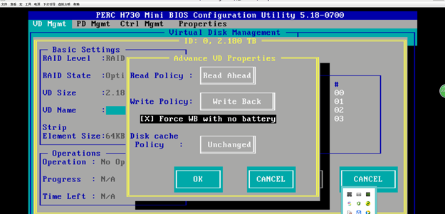

Change the write mechanism of the storage cache to Write-back.
- Restart the server and press Ctrl + R to go to the configuration page.Figure 1 Configuration page 1

- Select Virtual Disks and press F2. The following interface is displayed.Figure 2 Configuration page 2

- Press Enter. The setting page is displayed.Figure 3 Configuration page
